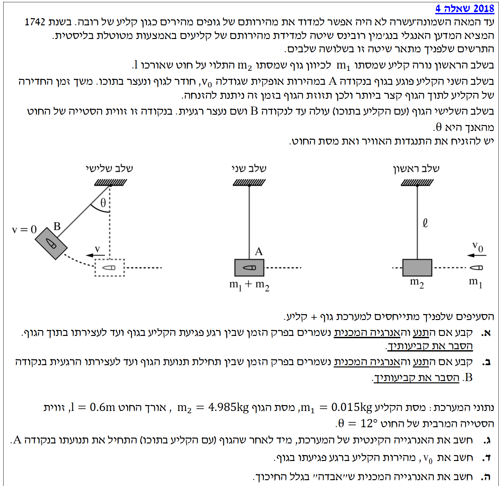

שלום תלמידים יקרים! השאלה שלפנינו עוסקת במטוטלת בליסטית - מתקן קלאסי ששימש בעבר למדידת מהירות של קליעים.
השאלה משלבת שני עקרונות פיזיקליים חשובים: חוק שימור התנע (הפועל בזמן ההתנגשות) וחוק שימור האנרגיה המכנית (הפועל בדרך כלל בזמן עליית המטוטלת לאחר ההתנגשות). בואו נפתור יחד, שלב אחר שלב!

[תמונת השאלה המקורית]לא נמצאה תמונה בשם question-image.png באותה תיקייה.
סעיף א'
קבע אם התנע והאנרגיה המכנית נשמרים בפרק הזמן שבין תחילת ההתנגשות (רגע הפגיעה) ועד לעצירת הקליע בתוך הגוף. הסבר.
מה נתון: קליע מסתו \( m_1 \), גוף (בול עץ) מסתו \( m_2 \). הקליע חודר לגוף ונעצר בתוכו תוך פרק זמן קצר מאוד. שלב זה נקרא "התנגשות פלסטית" (או התנגשות לא אלסטית לחלוטין). כיוון שתהליך החדירה קצר ביותר, אנו מניחים שהגוף (הבול) עדיין לא הספיק לזוז ממקומו או לעלות למעלה, ולכן החוט נשאר אנכי לאורך כל ההתנגשות.
מה מחפשים: האם נשמר התנע הקווי (האופקי)? האם נשמרת האנרגיה המכנית במערכת (קליע + גוף)?
נוסחאות ועקרונות בשימוש: \(\Sigma\vec{F} = m\vec{a}\)\( \vec{p} = m\vec{v} \)עבודת כוחות לא-משמרים = \(\Delta E_{k}\) (או \(\Delta E_{mechanical}\))
ניתוח כוחות (פתרון צעד-אחר-צעד):
חוק שימור התנע קובע שאם שקול הכוחות החיצוניים על מערכת (בציר מסוים) שווה לאפס, אזי התנע הכולל של המערכת באותו ציר נשמר.
תרשים כוחות (FBD) במהלך ההתנגשות:
נסתכל על המערכת הכוללת (קליע + גוף). בזמן הקצר של ההתנגשות, הכוחות החיצוניים היחידים הפועלים על המערכת הם:
1. כוח הכובד (כלפי מטה) - מסומן ב-\( (m_1+m_2)g \).
2. מתיחות החוט (כלפי מעלה, לאורך החוט האנכי) - מסומנת ב-\( T \).
כוחות אלו מאזנים זה את זה בציר האנכי (\( \Sigma F_y = 0 \)).
בציר האופקי (\( x \)), אין כוחות חיצוניים הפועלים על המערכת. כוחות החיכוך בין הקליע לגוף הם כוחות פנימיים למערכת המבטלים זה את זה (לפי החוק השלישי של ניוטון: פעולה ותגובה). מכיוון ששקול הכוחות בציר האופקי הוא אפס (\( \Sigma F_x = 0 \)), התנע נשמר.
לגבי האנרגיה המכנית: הקליע חודר לתוך העץ, פעולה המלווה בחיכוך משמעותי, עיוות (דפורמציה) ויצירת חום. כוח החיכוך בין הקליע לעץ הוא כוח לא-משמר המבצע עבודה שלילית. לפי המשפט \( W_{nc} = \Delta E_{mechanical} \), מכיוון שיש עבודה של כוחות לא משמרים, האנרגיה המכנית פוחתת (חלקה הופך לאנרגיית חום). לכן, האנרגיה המכנית אינה נשמרת.
מסקנה:
התנע נשמר (שקול כוחות חיצוניים באופק אפס).
האנרגיה המכנית אינה נשמרת (מושקעת עבודה על ידי כוחות חיכוך לא-משמרים - התנגשות פלסטית).
💡 הערת מורה:
חשוב לזכור עיקרון זה בהתנגשויות! בהתנגשות פלסטית (כאשר הגופים נצמדים זה לזה), התנע בדרך כלל נשמר (כל עוד אין כוחות חיצוניים המופעלים על המערכת באותו ציר), אבל האנרגיה הקינטית (ובמקרה זה, המכנית) לרוב אינה נשמרת, כי חלק מהאנרגיה "הולך לאיבוד" והופך לחום ולשינוי צורה פנימי.
סעיף ב'
קבע אם התנע והאנרגיה המכנית נשמרים בפרק הזמן שבין תחילת תנועת הגוף (רגע לאחר ההתנגשות בנקודה A) ועד לעצירתו הרגעית בנקודה B. הסבר.
מה נתון: כעת המערכת היא הגוף המאוחד (קליע + בול עץ) הנע לאורך קשת מעגלית מנקודה A (התחתית) לנקודה B (שיא הגובה).
מה מחפשים: האם נשמר התנע? האם נשמרת האנרגיה המכנית בתנועה מ-A ל-B?
נוסחאות ועקרונות בשימוש: עבודה של כוח קבוע: \(W = F \cdot \Delta x \cdot \cos\theta\)עבודת כוחות לא-משמרים = \(\Delta E_{mechanical}\)
ניתוח כוחות ואנרגיה (פתרון צעד-אחר-צעד):
תרשים כוחות (FBD) במהלך העלייה בקשת:
בזמן העלייה מ-A ל-B, פועלים על המערכת שני כוחות חיצונים:
1. כוח הכובד מטה (\( Mg \)).
2. מתיחות החוט אל מרכז המעגל (\( T \)).
שקול הכוחות אינו אפס! יש כוח רדיאלי (הגורם לתנועה המעגלית ולשינוי כיוון המהירות) וכן רכיב משיקי של כוח הכובד הגורם לכך שגודל המהירות קטן ככל שהמטוטלת עולה. מכיוון ששקול הכוחות החיצוניים אינו אפס (\( \Sigma \vec{F} \neq 0 \)), התנע אינו נשמר (הוא משתנה גם בגודלו וגם בכיוונו).
לגבי האנרגיה המכנית: יש לבדוק אילו כוחות מבצעים עבודה. כוח הכובד הוא כוח משמר. כוח המתיחות \( T \) הוא כוח לא-משמר, אבל נשים לב שהוא מכוון לאורך החוט, ולכן בתנועה מעגלית הוא פועל בניצב (\( 90^\circ \)) לוקטור המהירות \( \vec{v} \) המשיק לקשת התנועה. מכיוון שהכוח ניצב לכיוון ההתקדמות, הזווית בנוסחת העבודה היא \( \theta = 90^\circ \) ולכן \( \cos(90^\circ) = 0 \). כוח המתיחות במקרה זה אינו מבצע עבודה (\( W_T = 0 \)).
מכיוון שאין כוחות לא-משמרים המבצעים עבודה, האנרגיה המכנית הכוללת של המערכת נשמרת, ומתרחשת המרה מאנרגיה קינטית לאנרגיה פוטנציאלית כובדית.
מסקנה:
התנע אינו נשמר (יש שקול כוחות חיצוניים: כובד ומתיחות).
האנרגיה המכנית נשמרת (כוח המתיחות הלא-משמר ניצב לתנועה ולכן אינו מבצע עבודה).
⚠️ מומלץ לשים לב:
תלמידים נוטים לעיתים לחשוב שברגע שיש חוט - מופעל חיכוך או שיש איבוד אנרגיה. מומלץ לבדוק את כיוון הכוח ביחס לכיוון התנועה. מתיחות במטוטלת (כמו גם הכוח הנורמלי בתנועה על משטח חלק) לרוב אינה מבצעת עבודה, משום שהיא מאונכת לכיוון ההתקדמות!
סעיף ג'
חשב את האנרגיה הקינטית של המערכת, מיד לאחר שהגוף (עם הקליע בתוכו) התחיל את תנועתו בנקודה A.
מה נתון: אנו נעבוד בדיוק של 3 ספרות מהותיות.
מסת הקליע: \( m_1 = 0.015 \text{ kg} \)
מסת הגוף: \( m_2 = 4.985 \text{ kg} \)
המסה הכוללת (\( M \)): \( M = m_1 + m_2 = 5.00 \text{ kg} \)
אורך החוט: \( l = 0.600 \text{ m} \)
זווית הסטייה המרבית בנקודה B: \( \theta = 12.0^\circ \)
\( g = 10 \text{ m/s}^2 \).
מה מחפשים: אנרגיה קינטית בנקודה A מיד לאחר ההתנגשות: \( E_{k,A} \).
כפי שהוכחנו בסעיף ב', האנרגיה המכנית נשמרת בין נקודה A לנקודה B.
נקבע את מישור הייחוס לאנרגיה פוטנציאלית כובדית בגובה הנמוך ביותר (נקודה A), כלומר: \( h_A = 0 \), ולכן \( U_{g,A} = 0 \).
בנקודה B (שיא הגובה), המערכת נעצרת רגעית. כלומר גודל המהירות מתאפס: \( v_B = 0 \), ולכן האנרגיה הקינטית ב-B היא אפס (\( E_{k,B} = 0 \)).
לפי חוק שימור האנרגיה המכנית:
כעת, עלינו למצוא את הגובה \( h_B \). מגיאומטריה של מטוטלת, הגובה שאליו מגיעה המסה ביחס לנקודה התחתונה מבוטא על ידי ההפרש בין אורך החוט (\( l \)) לבין ההיטל של החוט על הציר האנכי (\( l \cos\theta \)):
\[ h_B = l - l \cdot \cos\theta = l \cdot (1 - \cos\theta) \]
\[ h_B = 0.6 \cdot (1 - \cos 12^\circ) \approx 0.0131 \text{ m} \]
נציב חזרה כדי למצוא את האנרגיה הקינטית (נשתמש במסה הכוללת \( M = 5 \text{ kg} \)):
📐 הערת מורה:
הנוסחה לגובה של מטוטלת \( h = l(1-\cos\theta) \) אינה מופיעה בדף הנוסחאות, ולכן חובה לפתח אותה בעזרת טריגונומטריה כפי שעשינו כאן, ואין לרשום אותה ישירות כנתון. עם זאת, מכיוון שהיא מופיעה כמעט בכל שאלת מטוטלת, כדאי מאוד לזכור אותה בעל פה - כך תדעו מראש לאיזו תוצאה עליכם להגיע בחישוב, ותוכלו לוודא שלא טעיתם בדרך הפיתוח!
סעיף ד'
חשב את \( v_0 \), מהירות הקליע ברגע פגיעתו בגוף.
מה נתון:
האנרגיה הקינטית מיד לאחר ההתנגשות כפי שחישבנו: \( E_{k,A} \approx 0.656 \text{ J} \).
המסה הכוללת \( M = 5.00 \text{ kg} \).
מסת הקליע בלבד: \( m_1 = 0.015 \text{ kg} \).
מסת הגוף: \( m_2 = 4.985 \text{ kg} \) (במנוחה בהתחלה, מהירותו 0).
מה מחפשים: את המהירות ההתחלתית של הקליע, \( v_0 \).
נשתמש בחוק שימור התנע (שהוכחנו בסעיף א' שמתקיים לאורך ציר האופק במהלך ההתנגשות).
לפני ההתנגשות: התנע הוא רק של הקליע (\( m_1 \cdot v_0 \)), שכן הגוף במנוחה.
אחרי ההתנגשות: התנע הוא של המערכת המשותפת (\( M \cdot u \)).
🎯 הערת מורה:
שימו לב כיצד "הלכנו אחורה בזמן". התחלנו מהסוף (זווית מקסימלית) כדי למצוא את המהירות מיד אחרי ההתנגשות, ומשם חזרנו עוד אחורה לרגע שלפני ההתנגשות כדי למצוא את מהירות הקליע. זהו דפוס חשיבה נפוץ ושימושי בשאלות רבות בסגנון "המטוטלת הבליסטית".
סעיף ה'
חשב את האנרגיה המכנית ש"אבדה" בגלל החיכוך (האנרגיה שהומרה לחום / עיוות פנימי בהתנגשות).
מה נתון: מהירות הקליע ההתחלתית: \( v_0 = 171 \text{ m/s} \).
אנרגיית המערכת המשותפת לאחר ההתנגשות: \( E_{k,A} = 0.656 \text{ J} \).
מה מחפשים: את ההפרש בין האנרגיה ההתחלתית במערכת (של הקליע בלבד) לבין האנרגיה המכנית מיד לאחר ההתנגשות. הפרש זה מסמן כ-\( \Delta E \) (גודל האנרגיה שאבדה).
מסקנה:
האנרגיה המכנית שאבדה בגלל החיכוך היא \( 218 \text{ J} \).
🔥 הערת מורה:
תראו איזה מדהים זה! התחלנו עם כ-219 ג'אול של אנרגיה, ורק קצת יותר מחצי ג'אול (0.656) שרד לאחר ההתנגשות כדי להניע את הבול. רוב מוחלט של האנרגיה הקינטית (מעל 99%) הפכה לחום ולאנרגיה פנימית בשבריר השנייה שהקליע חדר לעץ. זוהי המחשה מצוינת לכך ששימור תנע לא מבטיח בהכרח שימור אנרגיה.
נוסח השאלה המקורית
[תמונת השאלה המקורית]לא נמצאה תמונה בשם question-image.png.